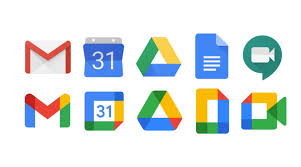
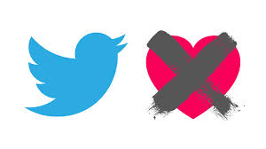

Google en los últimos días ha cambiado los iconos de todas sus aplicaciones
Leer más

Con todo el revuelo que ha causado la nueva función de Twitter,"Fleets", similar a las historias de Instagram
Leer más
